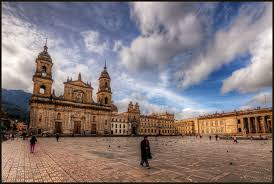
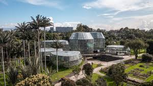

MONSERRATE

El cerro de Monserrate es el más conocido de los cerros Orientales de Bogotá. Junto a Guadalupe es uno de los cerros tutelares de la ciudad. Monserrate tiene una altitud de 3152 m y se ubica sobre la cordillera oriental.
Mas informaciòn AQUÌ
Plaza de Bolìvar

La plaza de Bolívar es la plaza principal de la ciudad de Bogotá y de Colombia. Está ubicada en el centro histórico de la ciudad, entre las carreras Séptima y Octava con calles Décima y Once
Mas informaciòn AQUÌ
Jardìn Botànico

El Jardín Botánico de Bogotá, nombrado oficialmente Jardín Botánico José Celestino Mutis en honor al astrónomo y botánico José Celestino Mutis, es un centro de investigación, conservación y divulgación de la diversidad de las especies vegetales en Bogotá, capital de Colombia.
Mas informaciòn AQUÌ
Sigue al IDRD para conocer mas lugares que puedes visitar en Bogotà u otras actividades para hacer en familia.
@idrdbogota